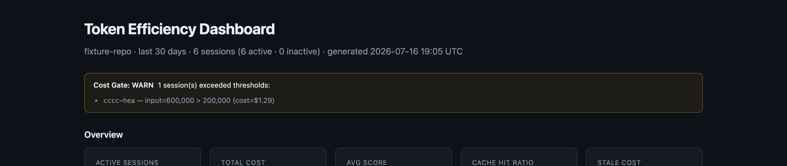
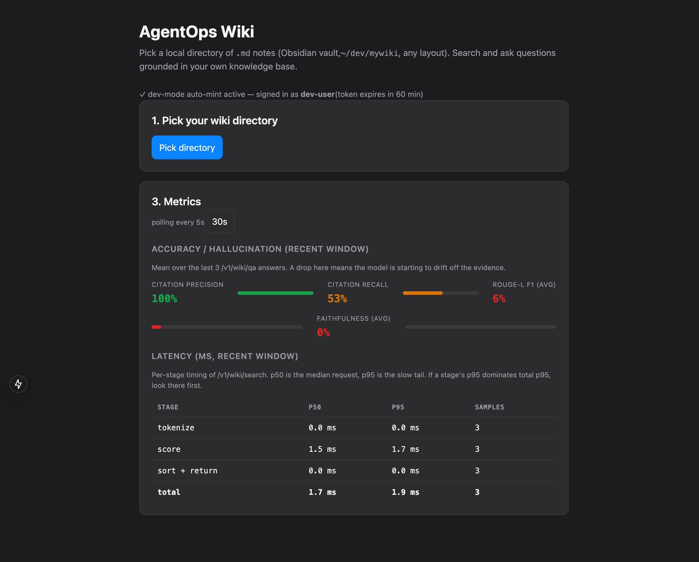
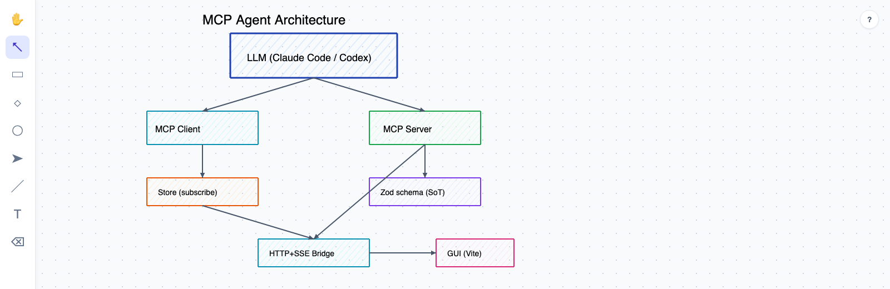
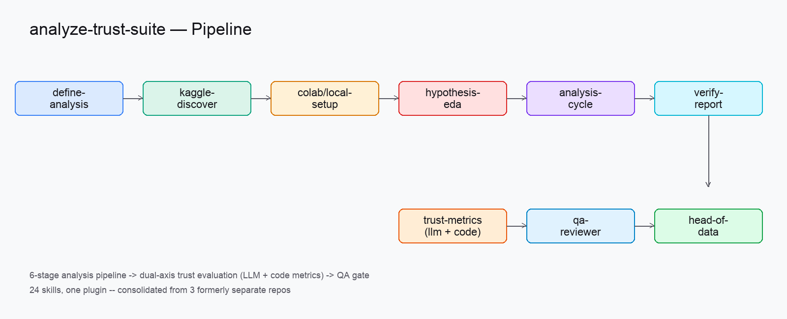
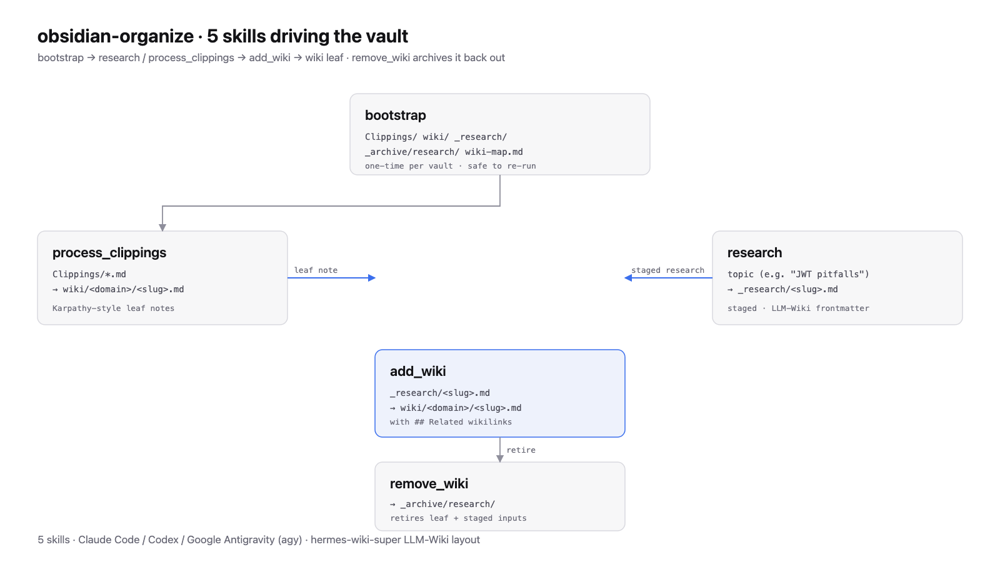

dev-harness-kit
AI-native dev harness for Claude Code & Codex. Installs one plugin that drives every task through the same loop — plan → build → review → ship — enforced by hooks the model can't talk its way around: TDD gates, git-workflow/worktree rules, and automated review. The sequence above is that review gate itself: on every PR, GitHub Actions fans out to /dev-kit:review and /dev-kit:security in parallel, a gate job aggregates both verdicts, and only an Approve unblocks the merge — diagrammed by dev-harness-kit's own code-viz skill from the real workflow YAML.

AgentOpsPipeline
Wiki-grounded chat: point it at a local Obsidian-style vault, ask multi-turn questions, and get answers with deep-links back to the source notes plus per-turn Faithfulness / Citation Recall / Citation Precision / ROUGE-L F1 metrics. LangGraph + MCP document server + pinned filesystem server behind a Next.js 15 web chat, plus a 30-case benchmark workbench that ranks prompt, workflow-topology, and tool-integration choices.

archidraw
Local, MCP-controlled whiteboard. Claude Code edits a scene through an MCP server, and a Vite GUI renders it live over a localhost HTTP+SSE bridge — the architecture diagram above was drawn by Claude Code driving Archidraw itself. Ships as an installable Claude Code / Codex plugin.

analyze-trust-suite
End-to-end data-analysis pipeline consolidated from 3 separate repos into a single plugin — one plugin.json, 24 skills. Runs the 6-stage pipeline above (dataset discovery → EDA → modeling → verified report), plus a goal-clarification loop and dual-axis trust evaluation (LLM + code-based metrics) before a QA review gate.

.md; process_clippings distills Clippings/*.md; add_wiki promotes both into wiki//.md with ## Related wikilinks; remove_wiki archives to _archive/research/" loading="lazy" />
obsidian-organize
Obsidian vault organizer plugin in the hermes-wiki-super LLM-Wiki style — 5 skills that drive a vault through one canonical layout: bootstrap creates the directory tree; research stages a topic as _research/<slug>.md; add_wiki promotes it to wiki/<domain>/<slug>.md with ## Related wikilinks; process_clippings distills raw Clippings/ files into Karpathy-style leaf notes; remove_wiki archives them back out. Same plugin install across Claude Code, Codex, and Google Antigravity (agy).